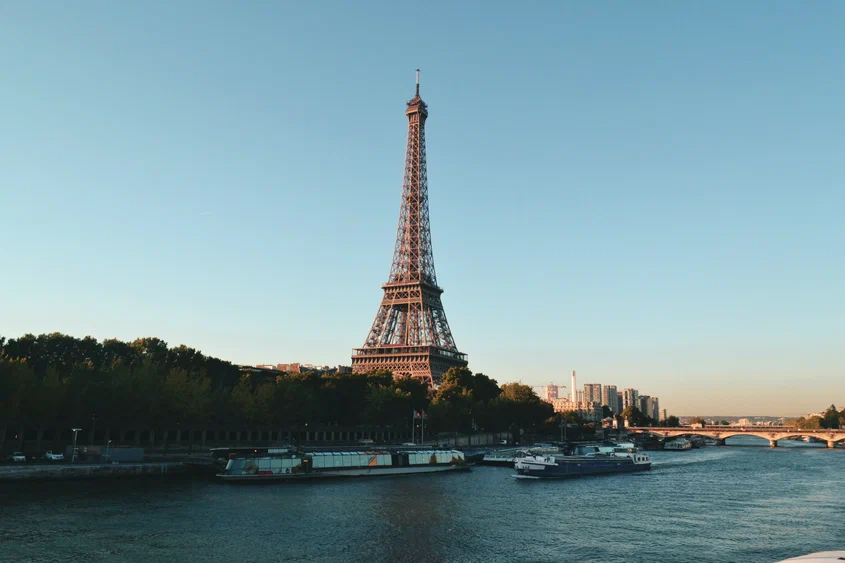
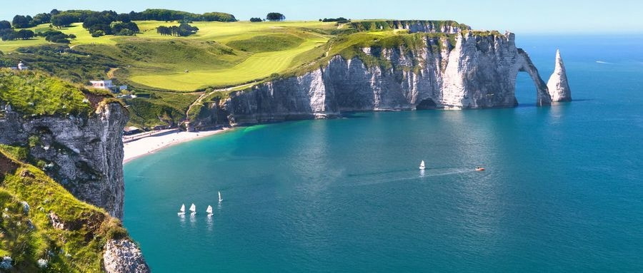
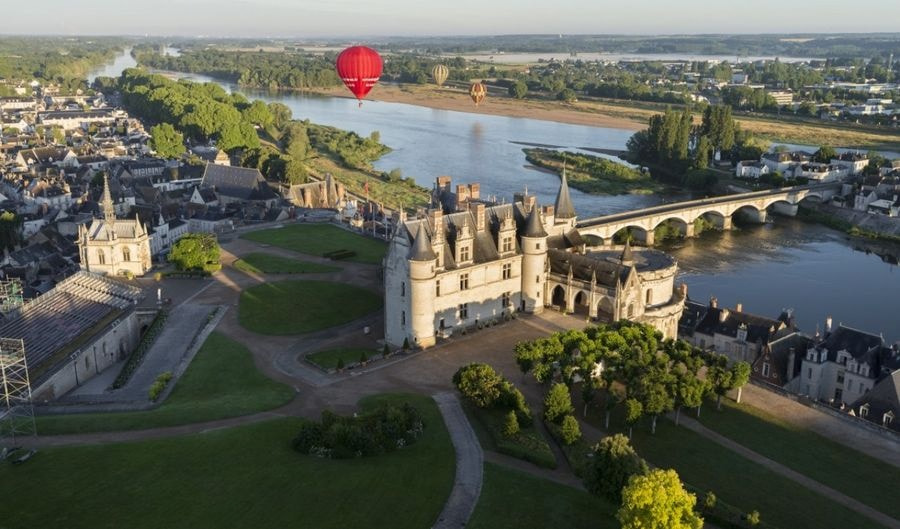
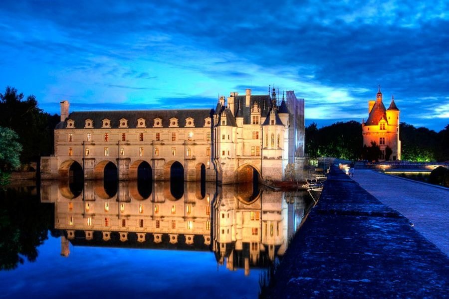
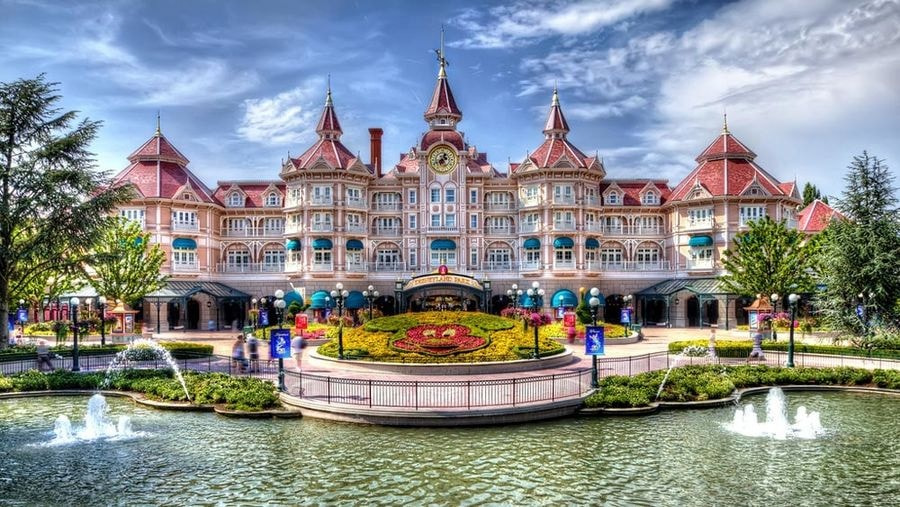

МЫ ДУМАЕМ ЧТО ЭТО СТРАНА ОЧЕНЬ ПОДХОДИТЬ ДЛЯ ПУТЕШЕСТВИЕ И НАДЕЕМСЯ ЧТО ВАМ ПОНРАВИТСЯ НАШ ВЫБОР
Франция
Крупнейшее государство Западной Европы, которое уже больше 15 лет подряд удерживает звание самой популярной страны в мире.
Романтика парижских улиц и очарование прибрежных городков Нормандии, волнение альпийских склонов и изысканность Лазурного берега — Франция прекрасна во всех её проявлениях.
На протяжении многих столетий и до сих пор Франция считается культурным центром и законодательницей моды для всей Европы.
Это страна мировых шедевров (49 объектов всемирного наследия ЮНЕСКО), высокой кухни (также признана ЮНЕСКО нематериальным культурным наследием), родина кино.
Французские монархи всегда окружали себя роскошью. Оставшиеся после них дворцы и замки поражают своей красотой и сложностью инженерной мысли.
На территории Франции около 40 тысяч дворцов и замков, и каждый имеет неповторимый облик и богатую историю.
Чего стоит лишь один замок Амбуаз, где находится могила легендарного Леонардо да Винчи, или замок Иф, прославленный в романе Дюма «Граф Монте-Кристо».
Дворец-музей Лувр в Париже, который на протяжении 250 лет служил главной резиденций французских королей, сегодня занимает первую строчку в списке самых посещаемых музеев мира. В топ-10 также входит музей Орсе.

Вторым после Парижа по популярности считается направление Прованс — Альпы — Лазурный Берег, которое ежегодно принимает до 10 миллионов туристов. В Провансе, помимо знаменитых лавандовых полей, находится более двух тысяч древних памятников, связанных с древнеримской и древнегреческой культурами. Столица региона Марсель — крупнейший порт и древнейший город Франции. Во Французских Альпах, с их заснеженными горными вершинами, зелёными долинами и кристально чистыми озёрами, базируются самые фешенебельные горнолыжные курорты в мире. А Лазурный Берег вот уже 77 лет принимает гостей Каннского кинофестиваля.
Французская кухня считается одной из лучших в мире. Она очень разнообразна и формально делится на народную и аристократическую. Национальные блюда подают в ресторанах по всему миру: луковый суп, утиное конфи, профитроли и другие. Есть и менее известные деликатесы, которые можно попробовать в разных регионах Франции. Так как любовь к французской кухне питают миллионы людей, большой популярностью пользуются гастрономические туры по Франции.
Экскурсия в Нормандию
Нормандия — это место, где зародился импрессионизм, где жили и работали великие художники Моне, Ренуар, Писсарро, а также писатели Гюго, Флобер и Мопассан. В свободное время они гуляли вдоль берега Ла-Манша, теперь здесь бродят туристы со всех концов Земли. За время поездки в Нормандию вы посетите три славных городка: Онфлер, Довиль и Трувиль. Первый знаменит самой древней деревянной церковью, а второй и третий тесно связаны с именем Коко Шанель: на этих курортах появлялись ее модные творения.

Замки Луары
Чтобы попасть в долину реки Луары, знаменитую своими историческими замками, сначала нужно добраться в город Блуа (Blois). Эта экскурсия позволяет посетить самые знаменитые замки: Амбуаз, Шамбор и Шенонсо, построенные 500 лет тому назад.

Великолепный Шамбор — символ роскоши и престижа, в XVII веке здесь проходили премьерные показы пьес Мольера. Амбуаз — архитектурный шедевр в стиле итальянского Возрождения. Замок был местом проведения рыцарских турниров. Шенонсо связан с именами короля Генриха II и его коварной супруги Екатерины Медичи.

Диснейленд
В 32 км к востоку от Парижа в городе Марн-ля Вале находится фантастический развлекательный комплекс — Евро-Диснейленд. К услугам туристов волшебные парки аттракционов, шоу, парады и сказочные игровые путешествия.
